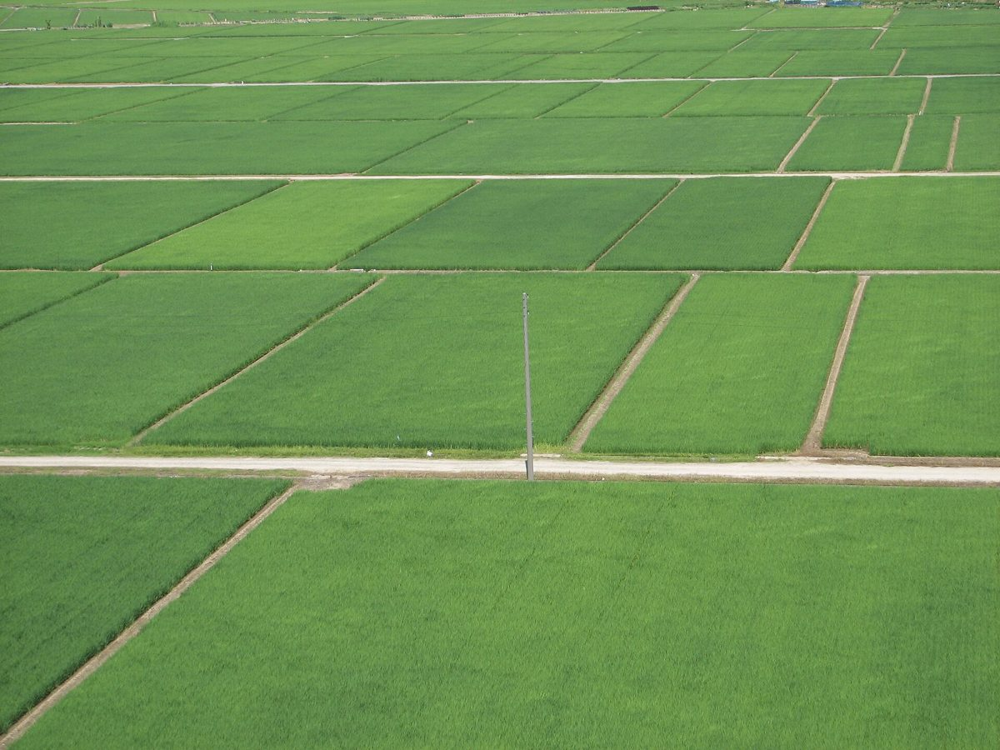
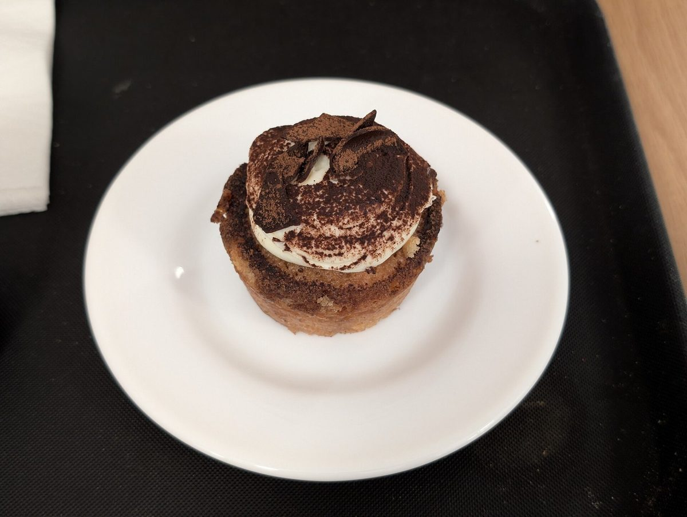

京都府伊根町本庄浜 / カフェ
こやcafe
田んぼのひろがる浜の町で、自分たちの手で直した古い家のなか、湯気の立つ一杯とお菓子でひと息つく。
お店のこと
古い家を、自分たちの手で。
こやcafeは、京都府丹後半島・伊根町の本庄浜にあるカフェです。公式Instagramでは、自然に囲まれた古民家を自分たちでDIYしながら開店の準備を進める様子が発信されていました(開店予定は2023年10月頃)。
京都新聞の記事では、田園風景の広がる本庄浜の築50年以上の木造家屋を改修し、サイフォンで淹れたコーヒーや手作りのシフォンケーキなどを出す、週末限定のお店として紹介されています(2023年頃の情報です)。
店名の意味・オーナーの想いなど、上記以外は確認できていません。「小家」という表記もあることから小さな家という意味合いがあるのかもしれませんが、これは制作側のイメージです。現在の営業状況は Instagram でご確認ください。


メニュー
サイフォンのコーヒーと、手づくりの甘いもの。
報道で紹介されているのは、サイフォンで淹れるコーヒーと手作りのシフォンケーキなどです。現在のメニュー・価格は準備中です。





営業時間・定休日: 準備中